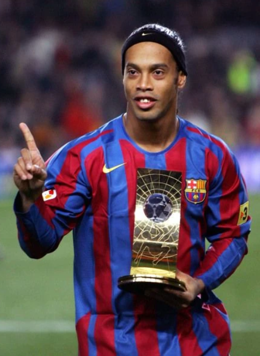
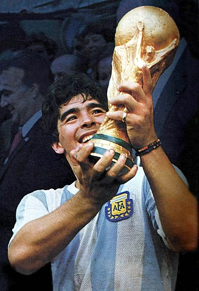
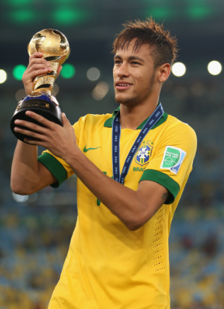

Ronaldinho
Ronaldinho est considéré comme l'un des plus grands joueurs de l'histoire du football. Sa carrière a débuté au Grêmio avant de s'envoler pour l'Europe où il a brillé au Paris Saint-Germain et surtout au FC Barcelone, remportant de nombreux titres, dont la Ligue des champions en 2006. Connu pour son incroyable technique, ses dribbles, et sa créativité, il a également été sacré Ballon d'Or en 2005. Ronaldinho est aimé pour son jeu spectaculaire et sa joie sur le terrain.
Maradona
Maradona est une légende du football et est souvent cité parmi les plus grands joueurs de tous les temps. Sa carrière a débuté à Argentinos Juniors, mais il a atteint la renommée mondiale avec Naples, où il a remporté deux titres de Serie A. Maradona est surtout connu pour sa performance lors de la Coupe du Monde de 1986, où il a conduit l'Argentine à la victoire, marquant des buts emblématiques, dont le célèbre "but de la main de Dieu". Son style de jeu, sa vision et sa technique exceptionnelle ont laissé une empreinte indélébile dans le monde du football.
Neymar
Neymar est l'une des stars contemporaines du football mondial. Il a commencé sa carrière professionnelle à Santos, où il a rapidement gagné en notoriété. En 2013, il a rejoint le FC Barcelone, formant un trio redoutable avec Lionel Messi et Luis Suárez, remportant la Ligue des champions en 2015. En 2017, il a été transféré au Paris Saint-Germain pour un montant record, où il a continué à briller. Connu pour sa rapidité, ses dribbles et sa capacité à marquer, Neymar est également un membre clé de l'équipe nationale brésilienne.
